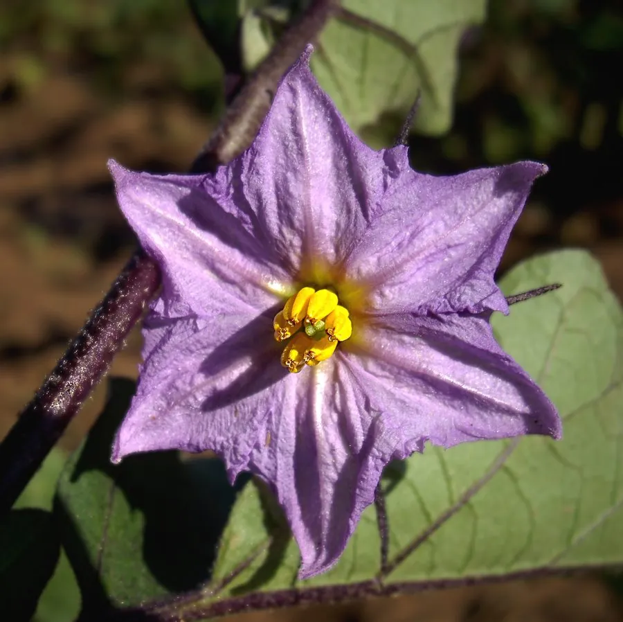

农作物与经济植物 · 植物界
茄子 Solanum melongena

茄子的果实多呈紫色，可炒食、蒸食、红烧和腌制，是夏季主要蔬菜之一，喜温暖、生长期长，南北广泛栽培。
- 分类
- 门被子植物门纲双子叶植物纲目茄目科茄科属茄属
- 栖息环境
- 温带与热带的菜地，喜温暖、光照充足与肥沃土壤，不耐霜冻
- 地理分布
- 原产印度与东南亚，现主产于中国、印度、埃及、土耳其等地
- 保护级别
- 暂无评估（栽培作物）
物种志
茄子是一年生或多年生草本，株高 0.6–1.5 m，茎直立，有分枝，全株有星状柔毛，常带紫色。叶片卵形或长圆状卵形，边缘有浅裂。花单生或簇生，花冠紫色或白色，五裂。果实为浆果，形状有长条形、圆形、卵形等，皮色有紫、红紫、白、绿等，果肉白色，含浆果状种子。
茄子原产印度与东南亚热带地区，栽培历史已有 2000 多年，汉代传入中国。它喜温暖、光照充足，生长期较长，不耐霜冻，适宜在疏松肥沃、排水良好的土壤中种植。茄子果实可炒食、蒸食、红烧、凉拌和腌制，是夏季主要蔬菜之一；富含膳食纤维、维生素 P（芦丁）和花青素，紫色的果皮中花青素含量较高。茄子叶和根在民间也作药用。中国是世界上最大的茄子生产国之一。
形态与习性
- 株高0.6–1.5 m，茎常带紫色
- 叶卵形，有星状柔毛
- 花紫色或白色，五裂
- 果实浆果，紫、白、绿等色
- 用途炒食、蒸食、红烧、腌制
- 营养富含膳食纤维、芦丁与花青素
趣味知识
- 茄子紫色的果皮富含花青素，白皮品种则没有这种色素。
- 茄子含维生素 P（芦丁），有助于增强毛细血管弹性。
- 茄子原产印度，汉代传入中国，已是夏季当家蔬菜之一。